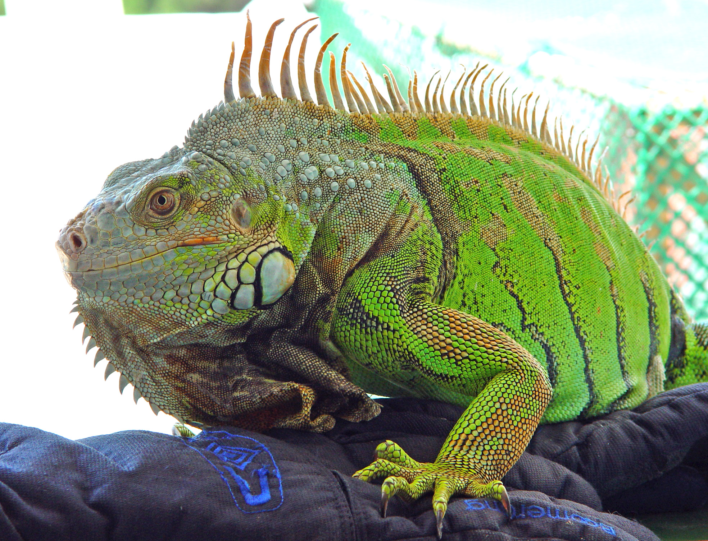

Su piel está recubierta de pequeñas escamas; tienen una cresta dorsal que recorre desde su cabeza
hasta su cola, esta es muy vistosa en los machos.
Las iguanas tienen patas muy cortas y cinco dedos
en cada pata, acabados en garras muy afiladas.

CARACTERÍSTICAS
Tercer ojo
Pacíficas
Cambian de Color
